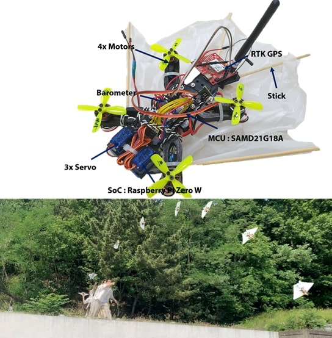
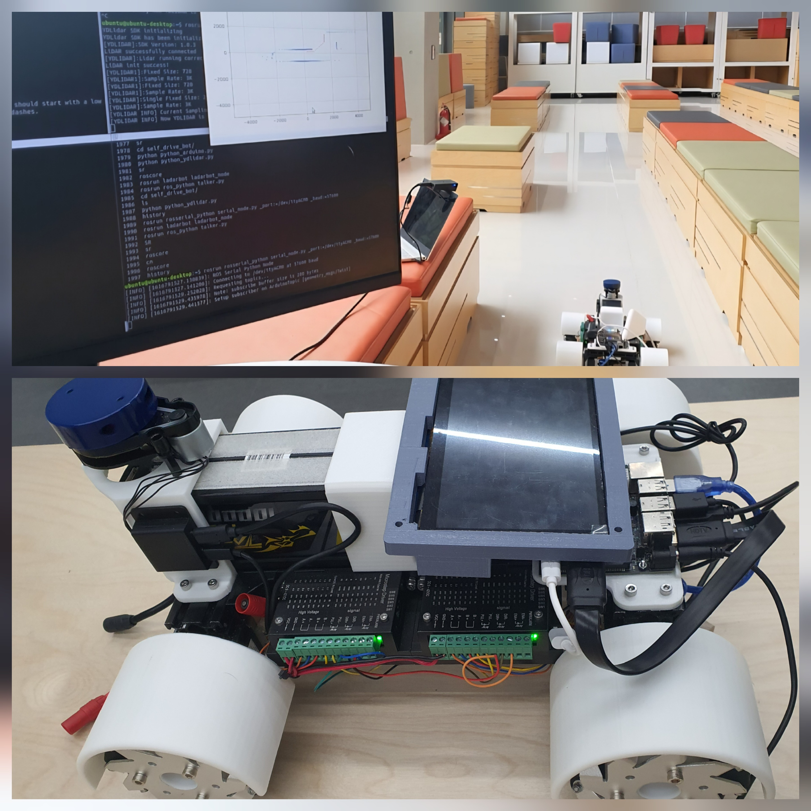

I am an undergraduate student in the Department of IT Convergence Engineering at POSTECH in South Korea.
I am currently working to address the following two problems.
• How robots can maintain agility, even in complex tasks and scenarios.
• Enable rapid adaptation to unseen tasks and environments.
I think we can achieve the two goals above only by fully leveraging both the information we can obtain from data and the physical information the robot possesses.
By combining learning-based methods and model-based methods, I aim to ensure that the robot can maintain fast and natural movements in any situation(complex, unseen).
Ultimately, I aim to implement an algorithm that can fully draw out the robot's hardware capabilities and achieve performance that surpasses human demonstrations.
Build and control non-linear dynamics governed flying squirrel inspired quadrotor using reinforcement learning.
Projects
Reachability-Aware MPPI for aggressive maneuvers
08.2025-Current
• Environment estimation from the sample history of MPPI.
• Obtain the reachable set using an empirical gramian based method.
Development of highly maneuverable Flying Squirrel Drone
06.2022-06.2025
video
• Implement integral backstepping based Lyapunov stable controller for drone.
• Implement adaptive Kalman filters for state estimation under aggressive maneuvers.
• Collect data using Mocap and GNSS for training neural net dynamics model.
• Implement simulation for full SE(3) dynamics model using MATLAB using ode45 integrator.
Skills : Linkage system design, 3D CAD, Hardware design, GNSS, Mocap, Learning from demonstration
Sloshing control with Physics-Informed RNN by 6-axis manipulator
08.2023 - 02.2024
Related achievement: 1st place, 2023 Undergraduate Group Research Program, POSTECH
video
• Development of 6-axis manipulator hardware and stabilization of low-level control system.
• Proposal and Implementation of a Physics-Informed RNN for water state observer.
• Implement LQR controller and velocity motion planning of manipulator for water sloshing control.
Skills : 3D CAD, 3D printing, Physics-Informed Learning, ROS2
Whole-body control of quadrupedal robot with arm by off-policy RL
06.2023-08.2023
video
• implement off-policy (SAC) and on-policy (PPO) RL to a Legged-manipulator robot in the Isaac Gym.
• Designed a learning pipeline for whole-body control of a legged-manipulator robot using a VAE and replay buffer of an off-policy RL.
Skills : OSC(operational space controller), Isaac Gym, RL

Development of Glidable Flying Squirrel Drone
02.2022-06.2022
video
• Develop Glidable drone with foldable wings.
• Simulating gliding drone with matlab.
Skills : 3D CAD, 3D printing, Kalman Filter
Quadruped-wheel robot control with impedance control
08.2021-01.2022
Related achievement: 1st place, 2021 Undergraduate Group Research Program, POSTECH
video
• Development of quadruped-wheel robot hardware and stabilization of low-level control system.
• Balancing control with inverse kinematics.
• Application of impedance control to the robot legs.
Skills : 3D CAD, 3D printing, CAN protocol, UDP protocol, simulating impedance control with matlab

Development of self-driving platform using mecanum wheel and 2D lidar
11.2020-02.2021
Related achievement: 3rd place, 2021 ICT Convergence Project Contest, devicemart
video
• Directly implement mapping and A* algorithms with Python.
• Development SLAM algorithm from scratch.
• Hardware development.
{kind=link}